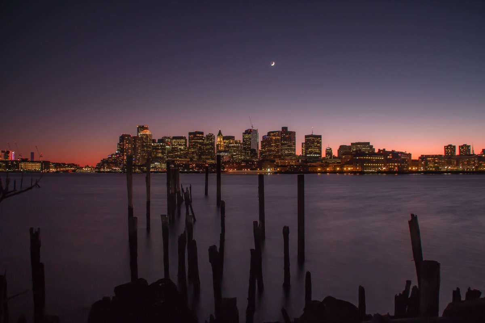
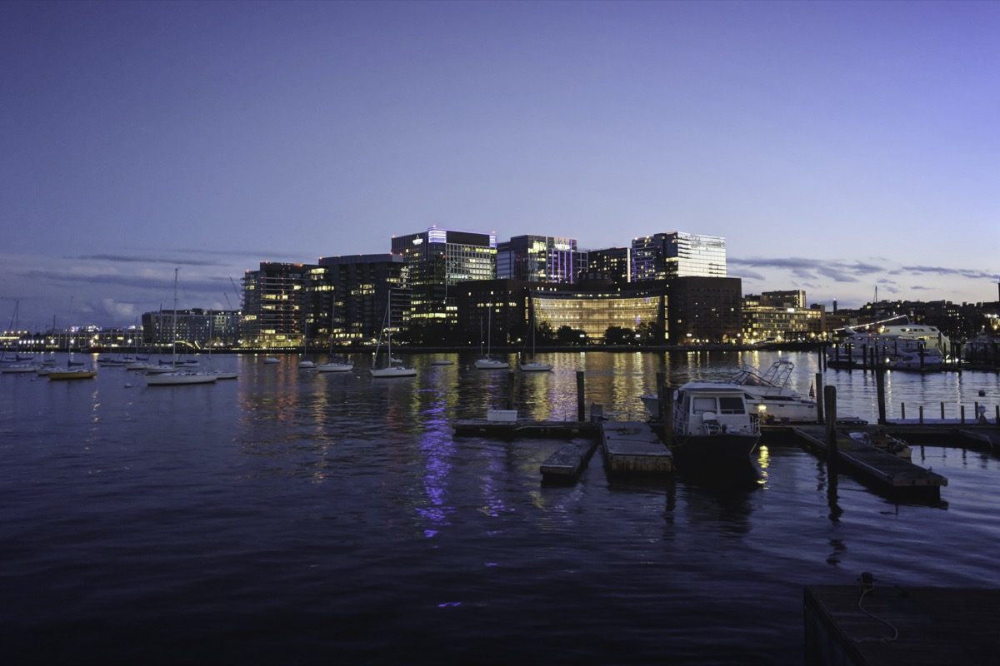
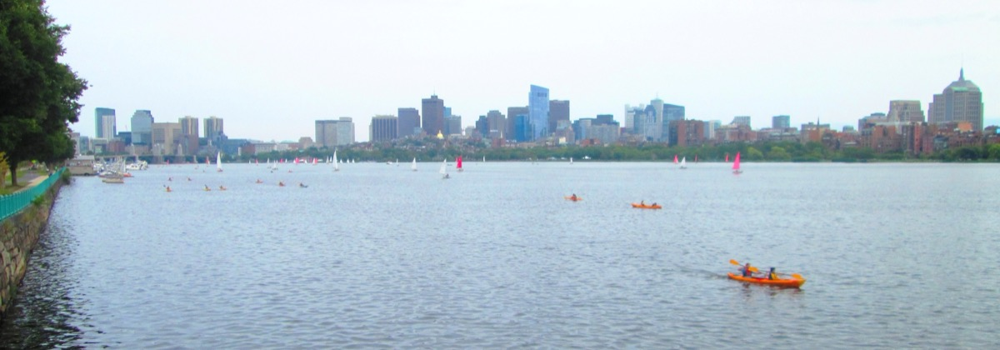
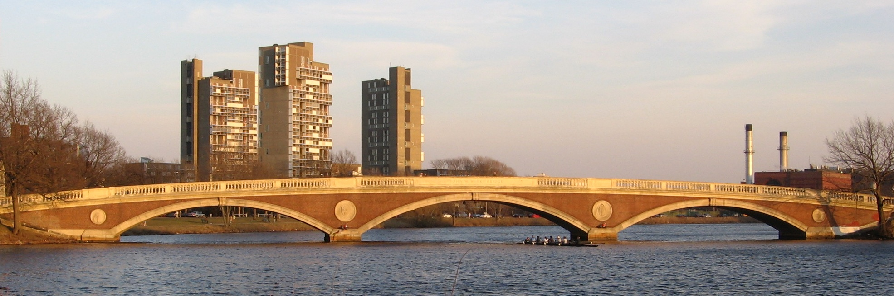
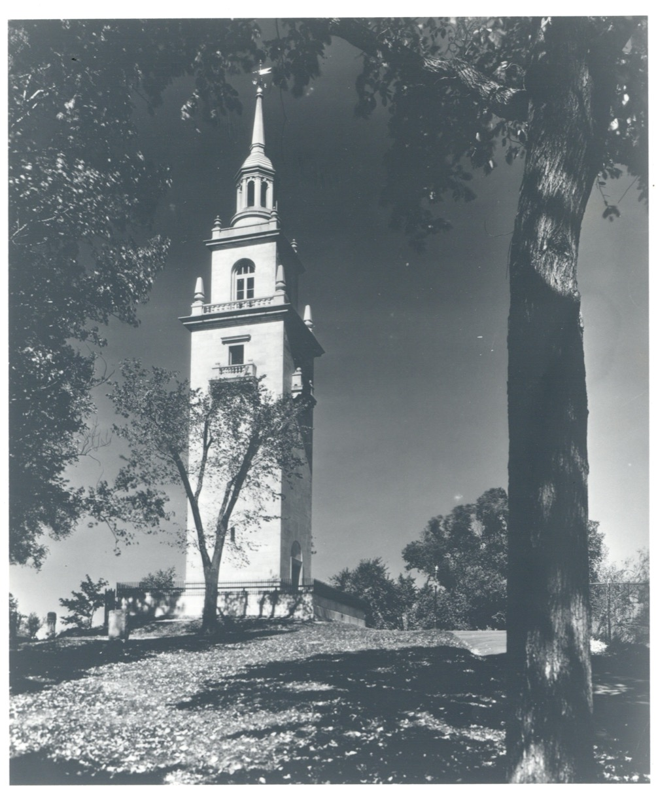

Boston does not have a skyline you can see from inside Boston. The city is built on a small peninsula and the towers are clustered in two groups, Downtown and Back Bay, so from most streets you are looking up at buildings, not across at them. The best views of Boston are almost all from the edges: across the harbor from East Boston, across the Charles from Cambridge, from the Seaport looking back at Downtown, or from the few hills that survived the 19th-century habit of flattening them for landfill.
That is actually good news, because the edges are cheap. Of the 19 viewpoints in this guide, 14 are free, and most of them are public parks or bridges you can reach on the T in under 20 minutes from Downtown. The paid ones, the View Boston observation deck at the Prudential and a couple of rooftop bars, are worth it for height, but they are the exception.
The short answer
Five views, one afternoon
All free, all on the T, none of them requiring a ticket.
01 · Free views
The best free views of Boston
Public parks, sidewalks and bridges. No ticket, no drink minimum, and most are open around the clock.
Piers Park, East Boston
95 Marginal St, East BostonT Maverick (Blue)Best at sunset

The single best free view of the skyline, and most visitors never hear about it. The whole waterfront lays out in front of you: Custom House, the Financial District, the Zakim to the right. Go an hour before sunset.
LoPresti Park, East Boston
33 Sumner St, East BostonT Maverick (Blue)Best late afternoon

Smaller and rougher than Piers Park, closer to the station, with a pocket beach and a straight-on view of the North End waterfront and the Zakim Bridge.
Fan Pier Park, Seaport
Northern Ave at the Moakley CourthouseT Courthouse (Silver)Best after dark

The closest you can stand to the Downtown skyline and still see all of it, wrapping around the courthouse at the tip of the Seaport. Best after dark, when the buildings are lit.
Longfellow Bridge
Cambridge St over the CharlesT Charles/MGH (Red)Best sunset & night

The Salt-and-Pepper Bridge has the best two-way view in the city: Back Bay lined up along the water upriver, the Zakim and the Museum of Science downriver. A 15-minute round trip.
Memorial Drive, the MIT side of the Charles
Between the Harvard & Longfellow bridges, CambridgeT Kendall/MIT (Red)Best golden hour

The classic Boston postcard: Back Bay reflected in the river with sailboats in front of it. The sun sets behind you, so the towers are lit gold for the last hour of the day.
Weeks Footbridge, Cambridge
Near Harvard's DeWolfe StT Harvard (Red)Best sunset, Head of the Charles

A pedestrian-only brick bridge from 1927 facing the river both ways, with Harvard's boathouses on both banks. The place to watch the Head of the Charles regatta in October.
Harvard Bridge (Mass Ave)
Mass Ave over the CharlesT Hynes (Green)Best at sunset

Carries Mass Ave across the widest part of the river, marked every 5.5 feet in "Smoots," a unit MIT students invented in 1958. Ten minutes to cross, a long wide sunset.
Castle Island and Pleasure Bay
2010 William J Day Blvd, South BostonT Broadway, bus 9/11 (Red)Best afternoon into evening

A granite fort, a small beach and a two-mile loop, facing the harbor and Logan's runways rather than the skyline. Sullivan's hot dog stand has been there since 1951.
02 · Paid views
The observation deck and rooftop bars
One true observation deck and a handful of rooftop bars with real views, for seeing the city from above rather than across.
View Boston at the Prudential Center
800 Boylston St, floors 50–52T Prudential (Green E)$30–35, timed entry

The highest public viewpoint in the city at 52 floors and about 750 feet: a 360-degree indoor gallery, an open-air roof deck, and a bar with a city model. Sunset slots sell out and cost more.
Lookout Rooftop and Bar, the Envoy Hotel
70 Sleeper St, SeaportT Courthouse (Silver)No cover; drinks $15–20
Faces the Downtown skyline directly across the water, closer than anywhere except Fan Pier. Most popular rooftop in the city; arrive before 6pm on a weekday for a table by the glass rail.
Contessa and Rooftop at Revere
Newbury St & Stuart StBack BayCost of a drink
Contessa, on the Newbury Hotel roof, looks straight down the Public Garden toward Downtown, best at lunch. Rooftop at Revere is a seasonal pool bar with a relaxed door and wide Back Bay views.
03
The best sunset spots in Boston
Boston's sunsets happen over Cambridge, which means the west-facing side of the Charles River gets the sun and the east-facing side gets the light. Where you stand depends on which you want.
For the sun itself: the Charles River Esplanade on the Boston side, particularly the dock and the lawn by the Hatch Shell. You are facing west up the river with Cambridge low on the far bank. The Longfellow Bridge does the same from higher up.
For the skyline lit up: cross to the Cambridge side. From Memorial Drive in front of MIT, the sun is behind you and every window in Back Bay catches it.
For the skyline with the sun behind it: Piers Park in East Boston. The sun sets behind Downtown, so the towers silhouette against orange, then the waterfront lights up.
The overhead option: View Boston's sunset slots on the open-air 51st-floor deck. They sell out in summer and cost more than daytime tickets.
04
The Boston skyline at night
Boston's skyline is better after dark than most cities its size because so much of it is on water. Every lit tower gets a second copy in the harbor or the river, and the Zakim Bridge, lit blue, anchors the northern end of every view.
Fan Pier in the Seaport is the closest night view, safe, well lit and a short walk from Seaport restaurants. The Longfellow Bridge gives you Back Bay reflected in the Charles, with Red Line trains crossing beside you. Piers Park is the widest night view, but the walk back to Maverick is through residential streets.
For height at night, View Boston stays open into the evening, and the Lookout rooftop faces Downtown directly. The Charlestown ferry runs into the evening too. More night ideas in things to do in Boston at night.
05 · From the water
Views of Boston from the water
Boston was built to be arrived at by sea, and the skyline was designed, by accident, to be seen from the harbor.
The MBTA Charlestown ferry
Long Wharf to Charlestown Navy YardT Aquarium (Blue)Subway fare, ~$2.40
A commuter route that happens to be the cheapest harbor cruise in the city. Ten minutes, passing the North End waterfront and docking beside the USS Constitution.
Spectacle Island, Boston Harbor Islands
Ferry from Long Wharf NorthT Aquarium (Blue)~$25–30 round trip, seasonal

Twenty minutes by ferry, with the highest point in the Harbor Islands: a 157-foot hill built from Big Dig dirt, and the entire skyline across four miles of open water.
The Harborwalk, Seaport to the North End
ICA to Christopher Columbus ParkT Courthouse to Aquarium (Silver)Best at dusk

Two miles round the channel, giving you the skyline from a dozen angles. Connects Fan Pier, the Lookout and the ferry landing.
06 · Hills & high points
Hills and high points
Boston flattened most of its hills to fill the harbor, but a few survived, and each gives a different, longer view than the waterfront does.
Bunker Hill Monument, Charlestown
Monument Square, CharlestownT Community College (Orange)Best in the morning

294 stone steps, no elevator, and four small windows at the top over Charlestown's rooftops, the Navy Yard and the Zakim Bridge. The only free high viewpoint in the city.
Copp's Hill Burying Ground, North End
Hull St at Snow Hill StT North Station (Orange, Green)Best late morning

The highest point in the North End, a 17th-century burying ground looking across the river's mouth at the Navy Yard and the USS Constitution's masts.
Dorchester Heights, South Boston
Thomas Park, South BostonT Broadway (Red)Best late afternoon

Where Washington's cannon forced the British out in 1776. A quiet park with a marble tower and a southward view of Downtown you don't get anywhere else.
Peters Hill, Arnold Arboretum
Bussey St gate, Jamaica PlainT Forest Hills (Orange)Best late afternoon, October

The highest point in the 281-acre free Arboretum, at 240 feet. Six miles of trees and rooftops to the skyline standing up small on the horizon.
Millennium Park, West Roxbury
300 Gardner St, West RoxburyCommuter Rail, then a walkBest at sunset
A former landfill turned into 100 acres of open hilltop where the Charles makes its last bend. The widest view in the city, and almost always empty.
07
Every viewpoint at a glance
| Viewpoint | Neighborhood | Nearest T | Cost | Best time | What you see |
|---|---|---|---|---|---|
| Piers Park | East Boston | Maverick (Blue) | Free | Sunset | Full Downtown skyline across the harbor |
| LoPresti Park | East Boston | Maverick (Blue) | Free | Late afternoon | North End waterfront, Zakim Bridge |
| Fan Pier | Seaport | Courthouse (Silver) | Free | Night | Downtown close-up over Fort Point Channel |
| Longfellow Bridge | Beacon Hill / Cambridge | Charles/MGH (Red) | Free | Sunset, night | Back Bay along the river, Zakim the other way |
| Memorial Drive at MIT | Cambridge | Kendall/MIT (Red) | Free | Golden hour | The postcard Back Bay skyline |
| Weeks Footbridge | Cambridge | Harvard (Red) | Free | Sunset | Upper Charles, boathouses, regatta |
| Harvard Bridge | Back Bay / Cambridge | Hynes (Green) | Free | Sunset | Widest river basin view |
| Castle Island | South Boston | Bus 9/11 from Broadway (Red) | Free | Afternoon | Harbor, islands, planes into Logan |
| View Boston | Back Bay | Prudential (Green E) | About $30–35 | Any; sunset premium | 360 degrees from 52 floors |
| Lookout Rooftop | Seaport | Courthouse (Silver) | Drinks | Dusk to night | Downtown across the channel |
| Charlestown ferry | Harbor | Aquarium (Blue) | Subway fare | Late afternoon | Skyline from the water, Zakim |
| Spectacle Island | Harbor Islands | Aquarium (Blue), then ferry | About $25–30 ferry | Summer afternoon | Whole city across open water |
| Harborwalk | Seaport to North End | Courthouse to Aquarium | Free | Dusk | Skyline from a dozen angles |
| Bunker Hill Monument | Charlestown | Community College (Orange) | Free | Morning | Charlestown, Navy Yard, Downtown from 221 ft |
| Copp's Hill | North End | North Station (Orange/Green) | Free | Late morning | Navy Yard and Constitution across the river |
| Dorchester Heights | South Boston | Broadway (Red) | Free | Late afternoon | Downtown from the south |
| Peters Hill | Jamaica Plain | Forest Hills (Orange) | Free | Late afternoon, October | Skyline over six miles of trees |
| Millennium Park | West Roxbury | Commuter Rail, then walk | Free | Sunset | Widest view, Charles River bend |
08
How to plan a day of views
The viewpoints on this list cluster into three areas, and each makes a half day. The harbor: take the Blue Line to Maverick for Piers Park and LoPresti, ride back to Aquarium, and walk the Harborwalk around to Fan Pier for the lights. The river: start at Charles/MGH, walk the Longfellow to Kendall, follow Memorial Drive west past MIT to the Harvard Bridge. The hills: the Orange Line connects Bunker Hill (Community College) at one end and Peters Hill (Forest Hills) at the other.
On weather: Boston haze is worst on humid summer afternoons. The clearest days are cold ones, October to April, after a front has come through. On cost: every free viewpoint here is on the T for $2.40. More free ideas in free things to do in Boston.
FAQ
Best views of Boston: common questions
Where is the best view of the Boston skyline?
For a free view, Piers Park in East Boston, one Blue Line stop from Downtown, has the most complete skyline view in the city, straight across the harbor. For a paid one, View Boston at the top of the Prudential Tower is the highest public viewpoint at 52 floors and looks over the whole city.
Is there a free observation deck in Boston?
Not a formal one. The Custom House Tower and the old Skywalk both charged, and View Boston at the Prudential charges admission. The free alternatives with height are the Bunker Hill Monument in Charlestown (294 steps, free), Copp's Hill, Dorchester Heights and Peters Hill at the Arnold Arboretum.
Where is the best place to watch the sunset in Boston?
The Charles River Esplanade and the Longfellow Bridge face west, so the sun sets behind Cambridge with the river in front of you. The Cambridge side along Memorial Drive gets the Back Bay skyline lit gold instead. Piers Park in East Boston gets the sun setting behind the Downtown towers.
How much does View Boston cost?
General admission is in the range of $30 to $35 for adults, with discounts for children and seniors and timed-entry tickets. Prices change seasonally and for sunset slots, so check the current price before you go.
What is the best view of Boston at night?
Fan Pier in the Seaport is the closest, brightest view of the lit Downtown skyline across Fort Point Channel. The Longfellow Bridge gives you the Back Bay towers reflected in the Charles. For height at night, View Boston stays open into the evening and the Lookout rooftop bar at the Envoy Hotel faces the skyline directly.
Can you see the Boston skyline from the water for cheap?
Yes. The MBTA ferry from Long Wharf to the Charlestown Navy Yard costs the same as a subway fare, takes about 10 minutes and gives you the harbor-side skyline both ways. The ferry to Spectacle Island in the Boston Harbor Islands runs seasonally for about $25 to $30 round trip and has the best long-range view of the city.